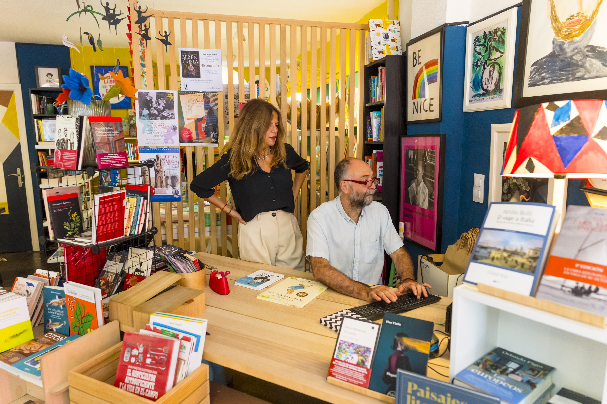

¿Quiénes somos?
Los Libros Salvajes nació en 2018 con una clara vocación: conseguir establecer
una comunidad lectora en Villaviciosa de Odón, combinando una potente agenda cultural con un amor genuino por los libors.
Más de 8 años después, podemos decir que lo hemos conseguido.
Clubes de Lectura todos los sábados, Cuentacuentos infantiles, Talleres de Escritura creativa, Cursos de Arte... Hacemos muchas cosas, siempre con un objetivo en mente: que te sientas como en casa rodeado de lo que más nos gusta: Los libros.
